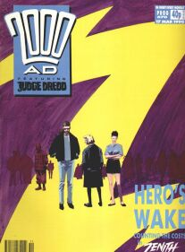

|  | ||
| Prog 651 by Carlos Ezquerra | Prog 665 by Colin MacNeil | Prog 670 by Steve Yeowell |
This stage features perhaps the biggest rug-pull that's ever been played on the readership, along with a raft of classic thrills at the height of their game, and a surprise reboot. Prog 650 provides a powerful jump-on point, with additional colour pages removing the need to split stories in half.
Sister comic Crisis moves into its third phase, blending two long-form serials with a third one-off strip in each issue.
Judge Dredd
The Shooting Match (605) reminds us that the ex-Judda Kraken is now a talented cadet. Young Giant (651-655) introduces the (extra-Judicial) son of the famous Judge Giant (murdered by Orlok's Satelat during Block Mania), who has been inducted into the Academy of Law, but is struggling with the desire for vengeance. A Letter to Judge Dredd (661) makes Dredd question the Justice Department and his position within it.
Judge Dredd returns, a little worse for wear, later in this stage...
Zenith: Phase III
To save the multiverse, worlds must die. How brutal must the heroes become in order to achieve their goals? And how can they hope to triumph when their most powerful allies are taken by the Lloigor and used against them? (Plus, there's a played-for-laughs side plot about the disgust felt by heterosexual male superheroes towards a transgender superhero, whose rampant nymphomania leaves them feeling dirty and betrayed.)
Phase IV begins in 1992, prog 791...
Rogue Trooper: The Hit, Conclusion
An arc that started in 1985 but was never fully committed to by editorial (appearing in only 18% of the progs since) drifts to a close in the 1989 Winter Special with more Basil Exposition than you can shake a stick at. Rogue abandons his biochipped buddies (even though re-gening them was a key goal of the character) and just wanders off suffering from ennui. They get re-born by a passing, alcoholic, hobo, scientist (true) but with no memories and so they're effectively dead.
It's complicated, but this Rogue is next seen in the 1992 Sci-Fi Special, whereas an entirely new Rogue starts right now in prog 650...
Rogue Trooper [Fr1day]: The War Machine *REBOOT*
This hard reboot introduces Alpha Company of the First Genetic Infantry. Trooper 19 (aka Friday) and his squad-mates Eight-Ball, Lucky and Top (that's the equivalents, in order, of Rogue, Gunnar, Bagman and Helm) are launched from Highside (Milli-Com equivalent) to an unnamed planet to take and hold Hill 392. The troopers are wiped out and, rather than retrieve biochips, Friday just takes their equipment as they die: although Lucky doesn't really have anything. He then sets off to return to Highside to question why they were sent to their deaths on the hill.
Continues in the next stage...
The Dead Man *NEW THRILL*
Yassa Povey, a young boy living in a quiet Cursed Earth settlement, discovers a terribly wounded man close to death: who he calls the Dead Man. His skin burnt, his memory gone - he is nursed back to health but unknowingly brings with him a terrible curse. There's a huge clue to his identity in part 3, hidden amongst the villagers babble when an old woman says "Have you seen his eyes? Not right, somehow ... not natural". This is a reference to his bionic eyes, which he had fitted after losing his organic ones in the semi-epic City of the Damned.
I never thought about that Bubbletown villager's reference to the Dead Man's eyes. What a stroke of brilliance, especially as iirc the bios hadn't been mentioned since they were fitted at the end of City of the Damned.
Having linked this story back to Mega-City One, the tale continues in Judge Dredd...
Judge Dredd
Tale of the Dead Man (662-668) continues in the prog immediately after the denouement of The Dead Man, providing the backstory that leads to the arrival of the Sisters of Death (Nausea and Phobia, colleagues of the Four Dark Judges). Dredd takes rookie Kraken (the ex-Judda) on his final assessment, but fails him. In the first two episodes of Countdown to Necropolis, Dredd's decisions take an odd turn as Kraken becomes the new Judge Dredd (the original having taken the long walk).
The countdown continues next stage...
Slaine: The Horned God, Book II
Slaine gathers together the four artifacts (cauldron, spear, sword and ... the other one) needed for him to become the high king and unite the tribes so that together they can fight back against the Drune Lords and the Fomorians.
Book III is in the next stage after a 23-prog wait...
Chopper: Song of the Surfer
Sky-surfing: a sport of dangerous rebellion, where death is a knife edge away. Here, it's a story of shrapnel and blood, as the Mega-City Two-set Supersurf Eleven ups the stakes by introducing heavy weapons as natural hazards. Seemingly all stick and no carrot, several sky-surfers take part, and bloody mayhem ensues.
Chopper returns (controversially, because he seems to die here) in 1990's first Judge Dredd Megazine in Earth, Wind & Fire.
Anderson, Psi-Division
The Random Man (657-659) is a slight tale about a man who murders on the whim of a dice roll, but also has a side plot about the persecution of a transgender entertainer by the Justice Department. The Screaming Skull (669-670) is an atmospheric whodunnit.
Anderson returns in prog 700's Shamballa...
Bradley
This sequence was heralded as Bradley's Thesaurus of Modern Music, because after Bradley Visits His Grandpappy, he then goes on a quest to find him some good music and Meets Jason Donovan, Goes Gothic and Goes Gigging. (This has now given up all pretence of being on an alien planet.)
Bradley Goes Mental in the next stage's prog 682...
Bix Barton *NEW THRILL*
Marmite sandwiches, matron! Bix Barton is a sort of upper class detective (master of the rum and uncanny) with a talking cane (Michael Cane) who goes on about rugby a lot and battles, well, rum and uncanny things (like a steam train with the face of Margaret Thatcher). Love it or loathe it, it is what it is.
Returns in the next Sci-Fi Special...
Beyond Zero [after Night Zero]
I swear I thought this had finished in prog 649, where it seemed obvious that giant zeppelin vs. man-with-a-goblet was a no-brainer, but the final two parts are here (fifteen progs later). Turned out that goblet-man isn't all smoking jackets and well-trimmed goatee: he also does a line in bomb-clones and combat-exoskeletons. The denouement has all the slim, attractive "feminist" characters lining up to snog Tanner and get jealous of each other.
The next prefix for Zero comes in the 1991 Annual with Lost in Zero, prior to the final full series appearing in prog 731's Below Zero...
Zippy Couriers
The last two tales are Mascot (a light-hearted story of extra-judicial police interrogation and explosive teddy-bears) and Shelob (a light-hearted story of exotic pets becoming light snacks for the talking cat).
This is it for Zippy Couriers.